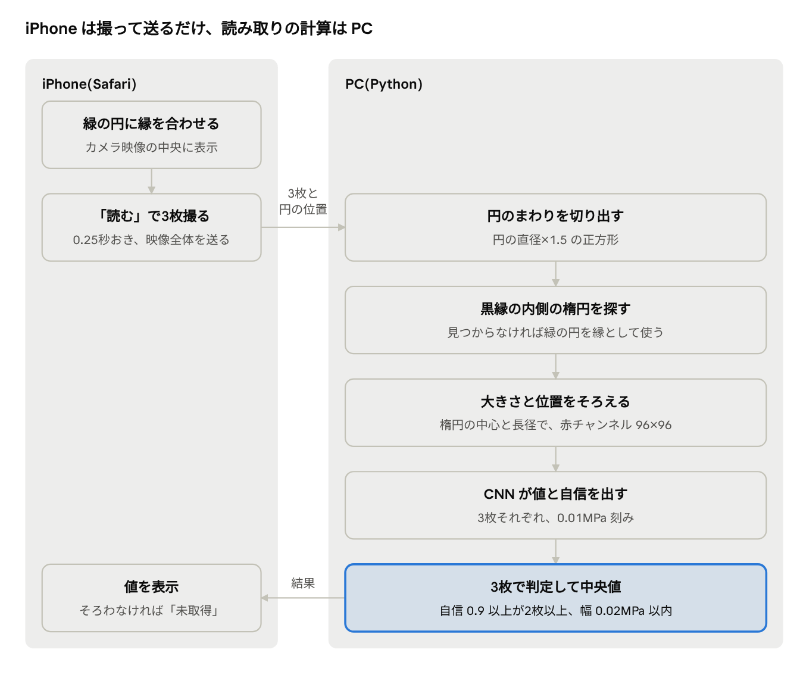
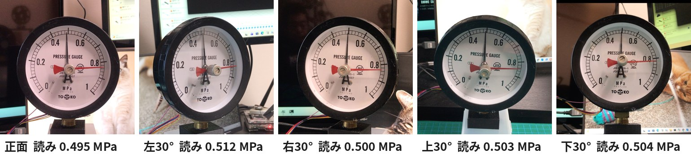
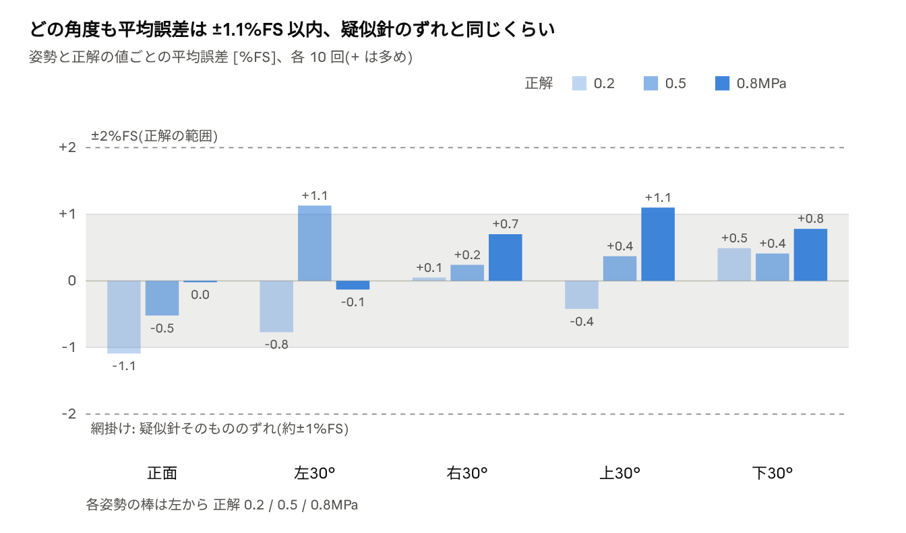

前回は XIAO ESP32S3 Sense を計器の前に固定し、機械学習で針を読みました。今回は iPhone です。Safari でページを開き、画面の緑の円に計器の黒い縁を合わせて「読む」を押すと、圧力の値が出ます。iPhone にアプリは入れません。読み取りの計算は同じ Wi-Fi にいる PC で行います。
疑似圧力計の針を 0.2・0.5・0.8MPa に止め、正面と上下左右30°の5つの角度から各値を10回ずつ読ませた結果です。
ただし、計器の前に手が入ると自信ありげに間違うことがあり、読めるのは学習したのと同じ作りの計器(TOKO 0〜1.0MPa)だけです。
「読む」を1回押すと、次の順で値が出ます。

1回の読み取りは、撮影と通信を合わせて約3秒です。
HTTPS の証明書は、以前作った iphone_capture(iPhone を PC の Web カメラにするツール)のものを借りています。iPhone の Safari は HTTPS でないとカメラを使えないためです。
(ここに iPhone の画面のスクリーンショットを入れる)
CNN は、XIAO の画像に iPhone の画像を加えて学習しました。iPhone の画像も、XIAO と同じく疑似圧力計で自動で集めています。PC が針を乱数の位置へ動かし、iPhone と XIAO に同時に撮らせて、針の位置を正解として記録します。
| 姿勢 | 枚数 | 使い方 |
|---|---|---|
| 正面 近め ・ 正面 遠め ・ 斜め左30° ・ 斜め右45°(2回) | 各200 | 学習(15%はテスト用に分けた) |
| 上から見下ろし＋傾け | 200 | 学習に使わず、テストだけ |
| XIAO 正面(照明4種) | 約3,500 | 学習 |
学習中は、前回と同じように画像を人工的に変形します。文字盤を 0〜30° 傾けた射影変換(傾く向きは乱数)、回転 ±10°、拡大縮小 ±12%、明るさ・映り込み・ぼけです。学習に使っていない「上から見下ろし」の200枚も、±2%FS 以内 100%、平均 0.69%FS で読めました。
このモデルは、針を止めた別の計器(同じ TOKO 0〜1.0MPa、0.87MPa)を iPhone で撮った写真8枚も、すべて ±2%FS 以内(0.856〜0.881)で読んでいます。
PC の Chrome ではすぐ動いたのに、iPhone では最初、違う理由で読めませんでした。
送られてくる画像が全部灰色。 最初は iPhone 側で円のまわりだけを切り出していました。縦持ちでは、切り出す範囲が映像の左右からはみ出します。Safari はそのとき何も描かず、下地の灰色だけが届いていました。Chrome ははみ出した部分だけ切り捨てて描くので、PC での試験では気づきませんでした。映像は丸ごと送り、切り出しは PC で行う形に変えて解決しました。
「cannot convert float NaN to integer」で止まる。 縁の検出は、明るさ175以上の画素を「文字盤の白」として探し始めます。灰色の画像や暗い写真ではその画素が1つもなく、中心が計算できませんでした。縁を探す前だけ明るさを伸ばし、それでも見つからなければ緑の円を使うようにしました。
針を反対側と取り違える。 針が 0.99 を指しているのに 0.433 と読んだ回がありました。自信が 0.83 で、当時の下限 0.8 を超えていたため値として出ています。ほかにも、1.0 付近の針を 0.02 と読んだ回(自信 0.92)がありました。下限を 0.9 に上げ、1回に3枚撮って値がそろったときだけ出すようにしました。
5つの角度すべてで ±2%FS 以内、平均の誤差は 0.34〜0.68%FS でした。
測り方は次のとおりです。

| 姿勢 | 読んだ回数 | 値が出た | 平均誤差(+は多め) | 平均絶対誤差 | 最大 | ±2%FS以内 |
|---|---|---|---|---|---|---|
| 正面 | 30 | 30 | −0.54%FS | 0.55%FS | 1.27%FS | 30/30 |
| 左30° | 30 | 30 | +0.07%FS | 0.68%FS | 1.21%FS | 30/30 |
| 右30° | 30 | 30 | +0.33%FS | 0.34%FS | 0.75%FS | 30/30 |
| 上30° | 34 | 30 | +0.35%FS | 0.63%FS | 1.36%FS | 30/30 |
| 下30° | 30 | 29 | +0.57%FS | 0.60%FS | 1.13%FS | 29/29 |
| 全体 | 154 | 149 | +0.15%FS | 0.56%FS | 1.36%FS | 149/149 |
値が出なかった5回は、どれも針が動いた直後で、針がまだ前の位置にあるように写っていました。どの回も自信が 0.9 に届かず、未取得になっています。間違った値は出ていません。

右・上・下30°では 0.8MPa で +0.7〜1.1%FS と多めに出ましたが、左30° の 0.8MPa は −0.1%FS です。正面は 0.2MPa で約 1%FS 少なめでした。どの姿勢と値の組み合わせも、平均は ±1.1%FS の内側です。疑似針はギアのガタと原点復帰で 1%FS 程度ずれるので、この偏りが iPhone 側のものかどうかは、まだ分けられていません。
下30°では、三脚を合わせている途中(計器の前に手が入っていた約2分間)の記録を集計から外しています。この間のことは次の「弱点」に書きます。
コードは GitHub(https://github.com/whiskerpad/Xiao_gauge-reader)の 06_phone_reader フォルダです。学習済みのモデル(05_ml/models/net_phone_v1.pt)も入っています。
start.bat を起動し、画面の QR「1. 証明書」から入れる(初回だけ)06_phone_reader\start_phone_reader.bat を起動する。torch などがなければ自動で入る疑似圧力計があれば、run_measure_phone.bat で今回と同じ測定ができます。終わったら python summarize_phone.py で姿勢ごとに集計します。読んだ画像と結果は 06_phone_reader\results に残ります。
疑似圧力計で集めた iPhone の画像と斜めの変形で学習し、縁の楕円で大きさをそろえると、正面から 30° までの角度で ±2%FS 以内に収まりました。XIAO の極座標CNN では 30° がほぼ読めなかったのと比べると、斜めには強くなっています。
右・上・下30° の 0.8MPa では、少し多めに出る偏りが残りました。原因の候補は、針が文字盤より約2mm手前にあることによる視差です(30° で約 0.6%FS 相当)。ただ、疑似針そのもののずれ(約 ±1%FS)と同じくらいの大きさなので、今の測定では切り分けられていません。
精度をもう一段上げる道筋は見えています。
ただ、この圧力計は精度等級 1.6 級と思われ、計器自体の許容差が ±1.6%FS です。点検の記録が目的なら、今の ±2%FS 以内で足りる場面が多いので、このシリーズはいったんここで区切ります。